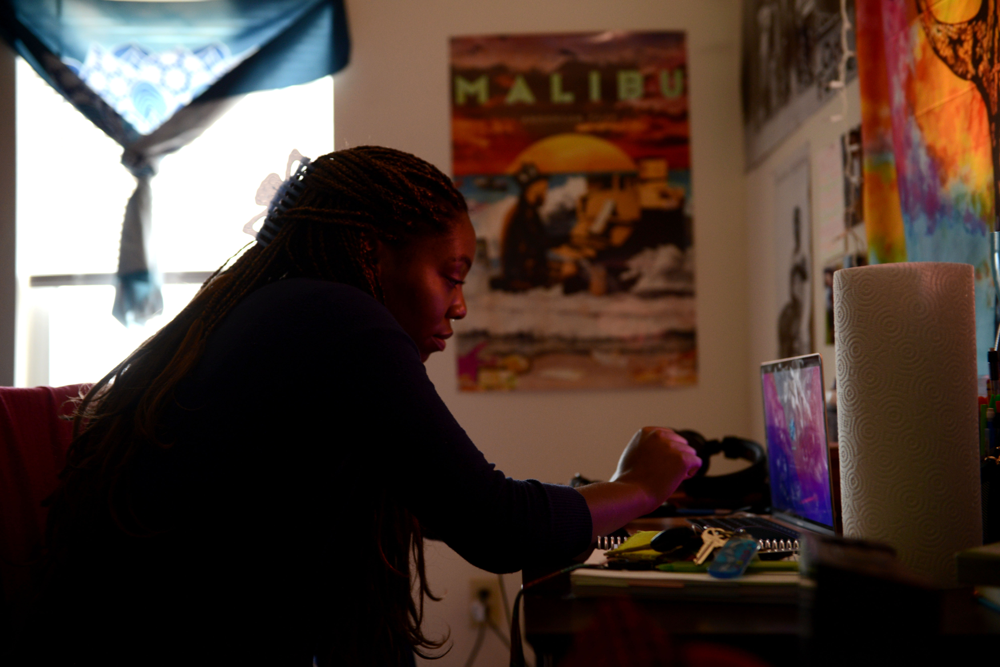
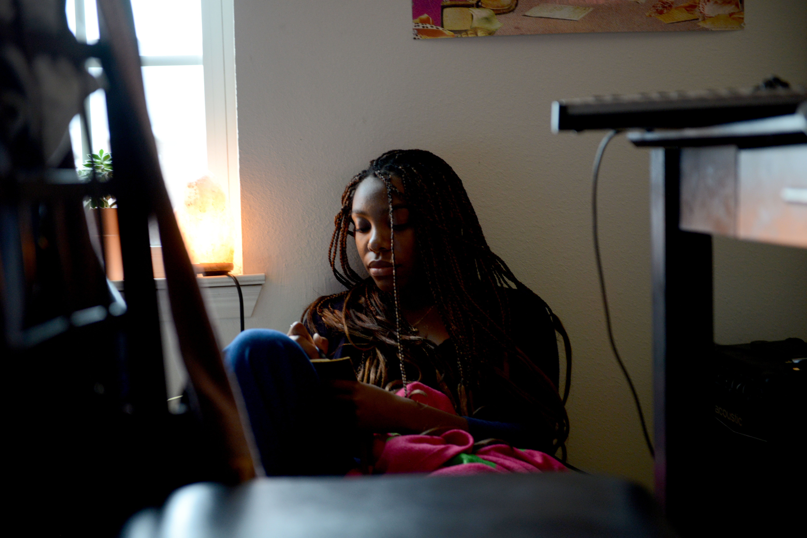
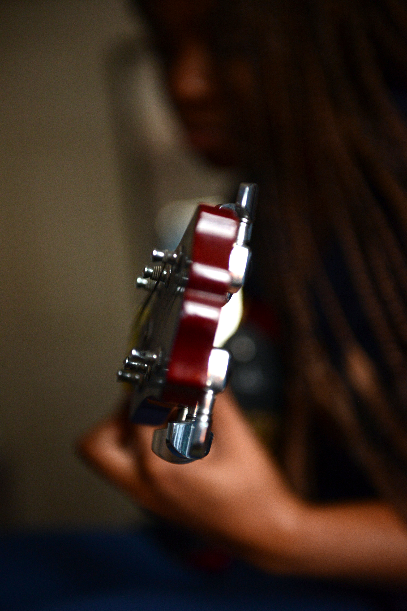
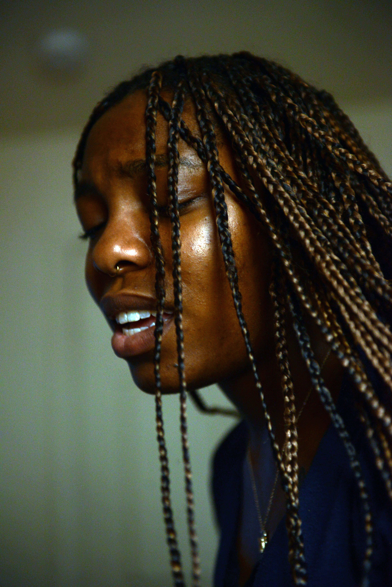
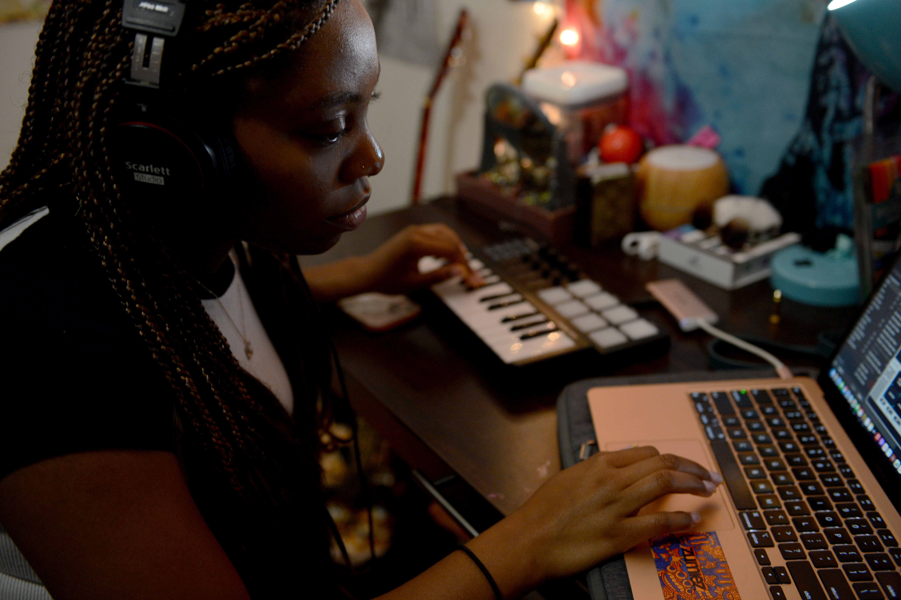
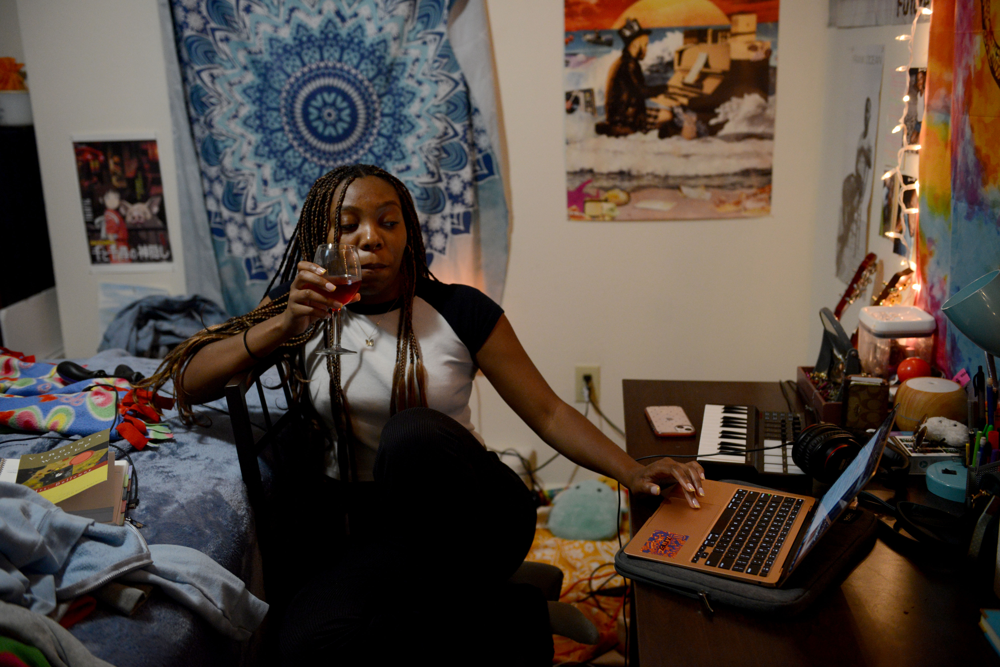

Experienced songwriter records original song for the first time
Lyric Green, an MU student studying psychology, chose to take a music
composition class during her second to last semester of college. While she has played guitar
since her junior year of high school and written many original songs over the years, she had no
experience with production prior to enrolling in the class. One of her assignments was to write a
song and record it using Logic Pro recording software to turn in for credit. She wrote and
recorded almost the entire song on the weekend of Nov. 12 at Central House in Columbia. This
was Green’s first time recording one of her original songs, titled “Say it Again.”

Lyric Green opens her laptop to start on her homework
for the day on Saturday, Nov. 12, 2022. She had
reserved the weekend to lock herself in her room and
produce an entire song to submit for her music
composition class.

Lyric Green writes new lyrics to go with her song for her
music composition class on Saturday, Nov. 12, 2022. “I
think it’s fun (writing lyrics) at first, but then I lose interest
because it’s hard,” Green said. “So I have to come back
every once in a while.”

Before recording her song, Lyric Green goes over the
chords on her guitar on Saturday, Nov. 12, 2022. “In high
school, I met these two girls who helped me with the
courage to perform in front of people,” Green said.
“They’re also how I got into guitar, and the interest just
grew from there.”

Lyric Green sings her original lyrics while playing guitar
on Saturday, Nov. 12, 2022. “My mom always tells me
that I was humming and singing before I could actually
talk,” Green said.

Lyric Green puts finishing touches on her song using
Logic Pro recording software for her class on Sunday,
Nov. 13, 2022. “I’m okay with (the software). I think I’m
doing better than what I thought I’d be able to do,
honestly,” Green said. “I was really happy to start trying
to make music when I joined. Now I’m losing motivation.”

Lyric Green submits her finished song for her music
composition class on Sunday, Nov. 13, 2022, celebrating
with a glass of wine. “I’m just happy to turn this in,” Green
said. “If I’m being honest, I think I can do better but I’m
turning it in anyway because it needs to be turned in.”